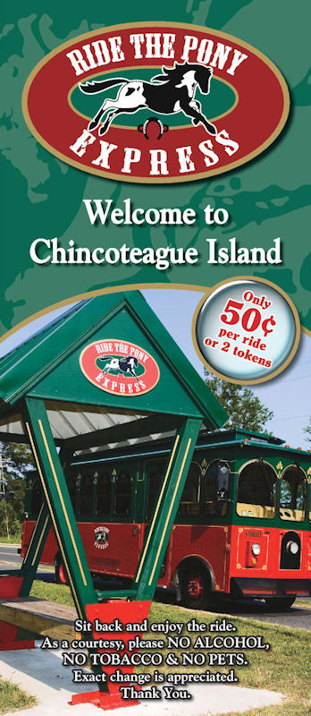

The Pony Express is a seasonal trolley service provided by the Town of Chincoteague, Virginia. This service is open to the public and follows fixed routes covering most of the island including many of the motels, restaurants, shops, parks, recreational areas, ice cream parlors, and campgrounds. Check the Trolley Stop map below. When your on Chincoteague look for the 'Trolley Stop' signs. In addition, you can hail a trolley along a route. All of the trolleys are equipped with wheelchair lifts.
The fare is 50 cents per person, per ride. Exact change is appreciated. Free ride tokens are available at local businesses. Drivers do not carry cash.
Click here to download the Pony Express Brochure.
